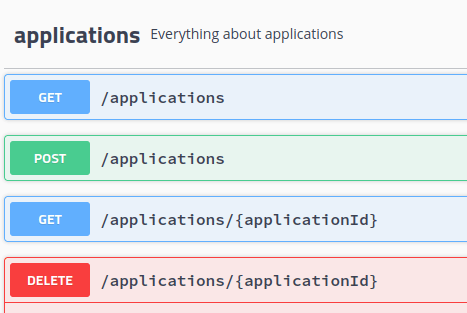
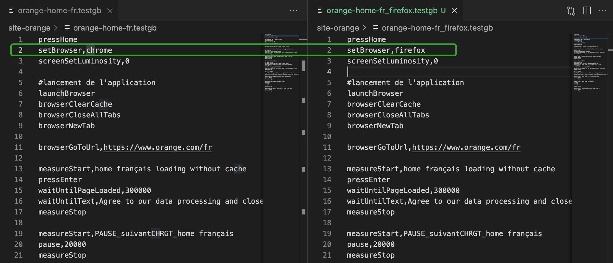

L’équipe Greenspector est fière d’annoncer la sortie de sa nouvelle release : la version 2.9.0.
Afin de mesurer la consommation des applications et des sites web, vous pouvez exécuter des parcours utilisateurs sur nos fermes de smartphone. Dans ce contexte, nous avons amélioré notre langage de test simplifié (le GDSL) avec par exemple des fonctionnalités de préparation des browsers, prise en compte de Firefox… Contrairement à de nombreux outils qui vous fournissent un impact environnemental uniquement sur la page principale et sur des environnements simulés, ces capacités vous permettront d’évaluer et de suivre précisément l’impact de votre solution numérique !
NOUVELLES FONCTIONNALITÉS
– En tant qu’automaticien, je peux désormais utiliser les méthodes du navigateur GDSL avec Firefox (sur Android uniquement)
– En tant qu’automaticien, je peux utiliser de nouvelles méthodes GDSL pour les tests iOS (waituntiltextgone, swipe) (sur iOS uniquement)
– En tant qu’automaticien, je souhaite de nouvelles méthodes de navigateur GDSL qui préparent le navigateur à la mesure afin que je puisse me concentrer sur la mesure des sites Web (Android uniquement)
AMÉLIORATIONS
– Amélioration de la méthode resetBrowser GDSL en configurant Chrome pour réduire les échanges de données réguliers (sur Android uniquement)
– Ajout de nouveaux tests unitaires pour toutes les méthodes GDSL interagissant avec Chrome afin qu’il soit plus facile d’étendre la prise en charge de différents téléphones et versions de chrome (sur Android uniquement)
– Augmentation du délai d’expiration par défaut de GDSL pour les méthodes d’attente et gestion des erreurs pour les méthodes de recherche (sur iOS uniquement)
– Ajout d’API swagger pour les applications de routes existantes (GET, DELETE application), les audits (GET) et les bancs de test (POST job, GET job)
– Lors de l’exécution d’un test sur un appareil iOS, supprimez la sonde logicielle, utilisez uniquement la sonde matérielle pour obtenir la décharge de la plate-forme


BUGS CORRIGÉS
– Correction et sécurisation des méthodes GDSL interagissant avec Chrome en ajoutant des assertions pour garantir les actions
– Correction des points vides lors de la mesure de l’énergie par la sonde matérielle qui empêchait l’envoi des résultats de test
BUGS IDENTIFIÉS
– Valeur « non définie » qui était affichée sur les métriques de données de processus sur l’onglet compteur de l’interface Web